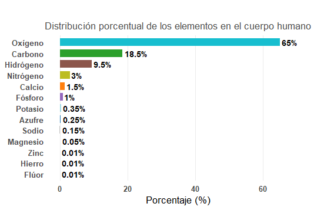
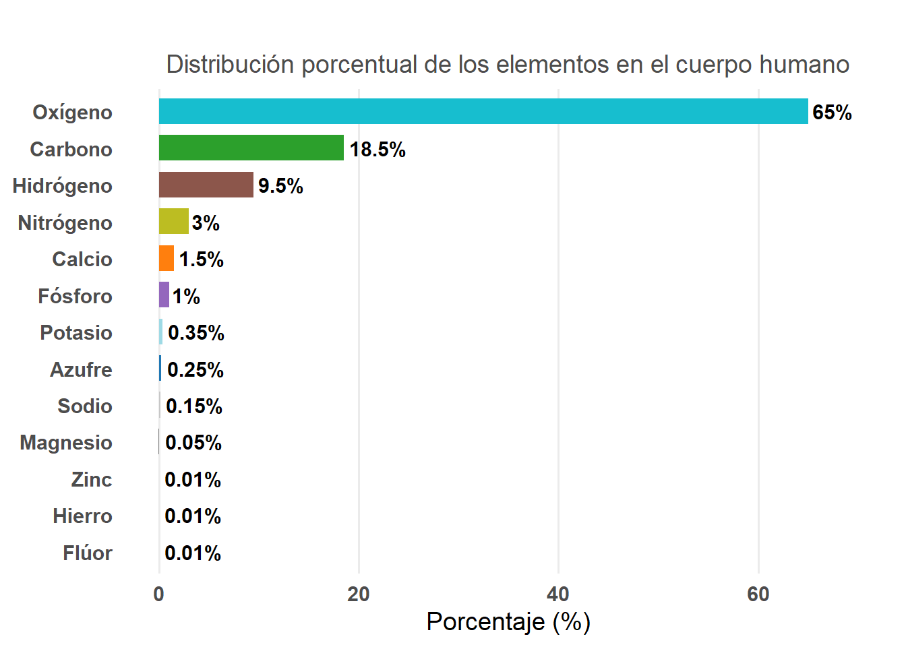
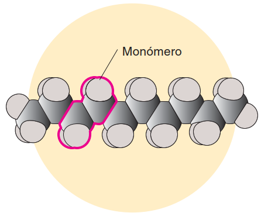
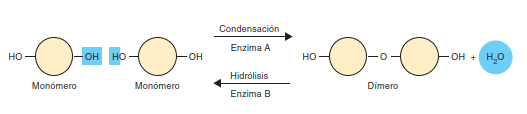
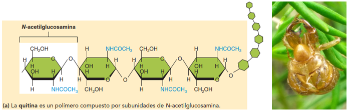
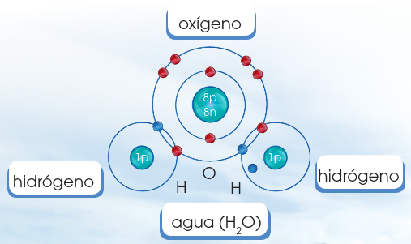
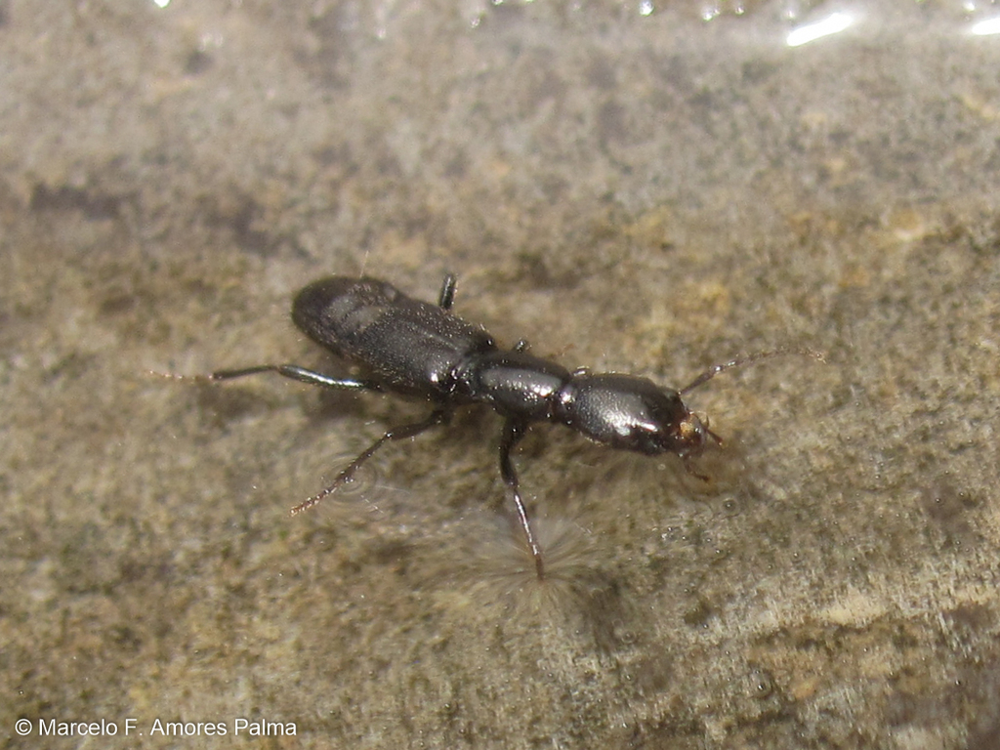
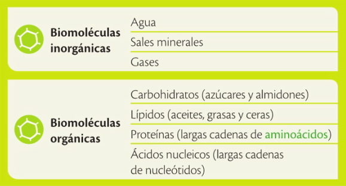
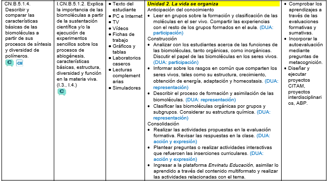

CN.B.5.1.4. Describir y comparar las características básicas de las biomoléculas a partir de sus procesos de síntesis y diversidad de polímeros.
Profesor: Marcelo Amores Palma
¿De qué estamos hechos los seres vivos? A simple vista, todos los organismos parecen muy diferentes: un árbol, un hongo, una bacteria o una persona. Sin embargo, si observamos más profundamente, todos compartimos los mismos elementos químicos fundamentales: carbono, hidrógeno, oxígeno, nitrógeno, fósforo y azufre.
Pero surge una pregunta intrigante:
Si las moléculas que componen a todos los seres vivos son las mismas, ¿por qué no somos todos iguales?
Reflexiona: el ADN de una bacteria y el tuyo están formados por los mismos nucleótidos; las proteínas de una planta y las de un animal están compuestas por los mismos aminoácidos. Entonces, ¿qué es lo que realmente nos diferencia? En esta clase descubriremos que la diversidad de la vida surge no solo de los elementos que la constituyen, sino de la forma en que esos elementos se organizan y se enlazan para formar distintas biomoléculas, dando origen a la increíble variedad de estructuras y funciones que observamos en la naturaleza.
En esta unidad exploraremos las biomoléculas como los pilares fundamentales de la vida, analizando su estructura, función y capacidad de reaccionar en los procesos biológicos. A través de modelos estructurales tridimensionales, comprenderemos su composición y comportamiento, elementos esenciales para entender la bioquímica de los seres vivos, incluyendo el metabolismo, las síntesis, las reacciones químicas y la reproducción. Este conocimiento nos conducirá hacia una comprensión más profunda de la organización celular, desde las células procariotas hasta las eucariotas vegetales y animales, permitiéndonos identificar los distintos tipos de células y los tejidos que conforman los organismos.
En la imagen se ve una molécula de azúcar con sus átomos organizados. Todas las moléculas orgánicas están compuestas por átomos de carbono. Los enlaces químicos fundamentales se realizan entre átomos de carbono o entre estos y átomos de hidrógeno, formando una estructura base hidrocarbonatada.
Como recordarás, toda la materia está formada por átomos que al juntarse unos con otros forman las moléculas. Todos los seres vivos estamos formados por átomos y también de moléculas que, al formar parte de nuestra estructura bioquímica, toman el nombre de biomoléculas.
Comencemos entonces por reconocer estos elementos que son parte constitutiva de los seres vivos. Cada elemento tiene propiedades físicas y químicas exclusivas, basadas en el número y configuración de las partículas subatómicas. Por ejemplo, elementos como el oxígeno y el hidrógeno son gases a temperatura ambiental; otros, como el plomo, son sólidos y muy densos. Algunos reaccionan fácilmente con otros átomos; otros permanecen inertes.
En la biosfera, casi todos los elementos aparecen en cantidades pequeñas y pocos son esenciales para la vida en el planeta. Los elementos más comunes de los seres vivos son cuatro: oxígeno, carbono, hidrógeno y nitrógeno, que suman alrededor de 96% del peso del cuerpo humano; en el resto de seres vivos, el porcentaje es similar. Estos y otros elementos que también existen en los organismos en cantidades muy pequeñas, son considerados bioelementos.

Aquí puedes ver los principales bioelementos que conforman la estructura de los seres vivos y principalmente el cuerpo humano.
# ==========================================# Composición elemental del cuerpo humano# Gráfico de barras horizontales (didáctico)# ==========================================# Datos baseelementos<-c("Oxígeno", "Carbono", "Hidrógeno", "Nitrógeno", "Calcio","Fósforo", "Potasio", "Azufre", "Sodio", "Magnesio","Hierro", "Flúor", "Zinc")porcentaje<-c(65, 18.5, 9.5, 3.0, 1.5, 1.0, 0.35, 0.25, 0.15, 0.05, 0.01, 0.01, 0.01)# Crear el marco de datoselementos_df<-data.frame(Elemento =elementos, Porcentaje =porcentaje)# Libreríaslibrary(ggplot2)# Paleta de colores didácticapaleta<-c("#1f77b4", "#ff7f0e", "#2ca02c", "#d62728","#9467bd", "#8c564b", "#e377c2", "#7f7f7f","#bcbd22", "#17becf", "#9edae5", "#c7c7c7", "#ffbb78")# ==========================================# Gráfico de barras horizontales# ==========================================grafico_barras<-ggplot(elementos_df,aes(x =reorder(Elemento, Porcentaje), y =Porcentaje, fill =Elemento))+geom_col(width =0.7, show.legend =FALSE)+geom_text(aes(label =paste0(Porcentaje, "%")), hjust =-0.1, size =4, fontface ="bold")+coord_flip()+scale_fill_manual(values =paleta)+labs(title =" ", subtitle ="Distribución porcentual de los elementos en el cuerpo humano", x ="", y ="Porcentaje (%)")+theme_minimal(base_size =14)+theme(plot.title =element_text(face ="bold", hjust =0.5), plot.subtitle =element_text(hjust =0.5, color ="gray30"), axis.text =element_text(face ="bold"), axis.title.y =element_blank(), panel.grid.major.y =element_blank(), panel.grid.minor =element_blank())+ylim(0, 70)# ajusta el rango del eje Y# Mostrar el gráficoprint(grafico_barras)

# ==========================================# OPCIONAL: versión con escala logarítmica# ==========================================grafico_log<-ggplot(elementos_df,aes(x =reorder(Elemento, Porcentaje), y =Porcentaje, fill =Elemento))+geom_col(width =0.7, show.legend =FALSE)+scale_y_log10()+geom_text(aes(label =paste0(Porcentaje, "%")), hjust =-0.2, size =3.5)+coord_flip()+scale_fill_manual(values =paleta)+labs(title ="Composición elemental del cuerpo humano (escala logarítmica)", subtitle ="La escala logarítmica resalta los elementos presentes en trazas", x ="", y ="Porcentaje (escala logarítmica)")+theme_minimal(base_size =14)+theme(plot.title =element_text(face ="bold", hjust =0.5), plot.subtitle =element_text(hjust =0.5, color ="gray30"), axis.text =element_text(face ="bold"), panel.grid.major.y =element_blank(), panel.grid.minor =element_blank())# Mostrar gráfico alternativo# print(grafico_log)
Los bioelementos y compuestos orgánicos son aquellos que sirven como bases químicas y biológicas para el funcionamiento de los seres vivos.
Una de las características más importantes de las biomoléculas es que están compuestas de carbono (C). Este elemento tiene la capacidad de formar moléculas de manera cíclica; además, puede formar polímeros y muchos otros tipos de moléculas que son nuestra base molecular.
Los seres vivos también están compuestos por otros elementos fundamentales: el hidrógeno (elemento más abundante de la biosfera y parte de la molécula de agua), el oxígeno (componente del agua, de todos los ácidos y de sustancias orgánicas; forma la capa de ozono), el nitrógeno (compuesto de los ácidos nucleicos), el fósforo (es parte de la estructura del ADN, ARN y del ATP), y el azufre (forma parte de las proteínas). Todos estos en diversas proporciones (CHONPS).
Interdisciplinariedad. Biología y Química. Además de los elementos que forman las biomoléculas, también existen otros que forman parte de los procesos metabólicos y estructurales de los seres vivos, como: boro, cromo, cobre, hierro, flúor, yodo, zinc, entre otros.
¿Cómo se forman las biomoléculas?

Las biomoléculas (excepto los lípidos) son polímeros; esto quiere decir que son moléculas grandes y complejas que se forman por muchos componentes básicos similares llamados monómeros. El monómero es una molécula pequeña y básica, que forma cadenas lineares o ramificadas de un polímero. En la imagen se observa un esquema simplificado.
La síntesis o construcción de polímeros

Los monómeros se unen entre sí para formar moléculas más grandes, llamadas polímeros. Esto ocurre como resultado de reacciones llamadas síntesis por deshidratación. En la deshidratación se pierde una molécula de agua (deshidratación = eliminación de agua).
La degradación o ruptura de polímeros
Los polímeros se pueden degradar mediante una reacción llamada hidrólisis (hidro: agua, lisis: ruptura o disociación). Esta reacción ocurre entre una molécula de agua y otra molécula; allí la molécula de agua se divide y sus átomos pasan a formar otra especie química.

Ejemplo de monómero a polímero: La quitina es un polímero compuesto por subunidades de N-acetilglucosamina. La quitina es un componente importante del exoesqueleto (cobertura externa) de los insectos como el de esta cigarra.
Clasificación de las biomoléculas
Moléculas inorgánicas
Son moléculas de configuración simple que se encuentran tanto en la corteza terrestre como en los seres vivos, juegan un papel fundamental para la vida por la labor que realizan. Son el agua y las sales minerales.
El agua
Como parte de las biomoléculas, el agua es la base estructural y funcional para el metabolismo y mantenimiento de los seres vivos. Es una de las moléculas más abundantes en la Tierra (71 %).

El agua tiene una especial configuración electrónica que se debe al tamaño mayor del átomo de oxígeno respecto de los átomos de hidrógeno. Esto le atribuye una electronegatividad muy especial a causa de la atracción que ejerce el núcleo del oxígeno sobre los átomos de hidrógeno, haciendo que el agua sea una molécula polar.

Esto le confiere una característica única de cohesión molecular que le permite tener una tensión superficial.
El agua es, además, un disolvente universal e interviene en muchas reacciones bioquímicas, especialmente, es importante en la síntesis de biomoléculas y en las funciones biológicas. Estas funciones -desde la función celular hasta la conductora, la estructural y las funciones fisiológicas reguladoras no serían posibles sin la presencia del agua en los organismos.
Moléculas orgánicas
Estas moléculas existen únicamente en los seres vivos y están compuestas principalmente por cadenas hidrocarbonatadas más los otros bioelementos (CHONPS). Estos seis elementos son los principales componentes de las biomoléculas pues permiten la formación de enlaces covalentes estables entre ellos (comparten electrones). Permiten a los átomos de carbono la posibilidad de formar esqueletos tridimensionales. Permiten la formación de enlaces múltiples (dobles y triples) y permiten que se den una gran diversidad de grupos funcionales (alcoholes, ácidos, aminas, cetonas, etc). Se clasifican en cuatro grupos básicos: carbohidratos o glúcidos, lípidos, proteínas y ácidos nucleicos.

Interculturalidad. En la lengua quichua, el agua es yaku, que significa líquido vital. Sin este elemento existe lo que se llama el yakunañay, o la sed, que puede privar la vida. Los indígenas piensan que el agua, a semejanza de la tierra, es mama, la madre agua, que a su vez la conciben como la sangre del planeta.
Beber dos litros de agua diarios te mantendrá en forma y con salud. ¡Una buena autoestima requiere que tú te cuides!

Para profundizar en los contenidos y alcanzar los resultados de aprendizaje, te invito a tomar tu clase personalizada. No dudes en dejar tus preguntas y comentarios, así como seguirnos en todas nuestras redes. ¡Hasta pronto!